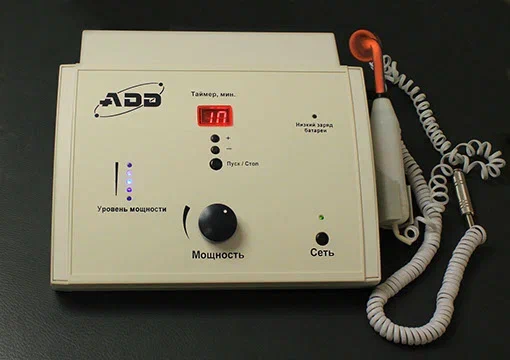
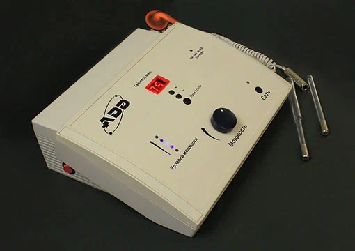
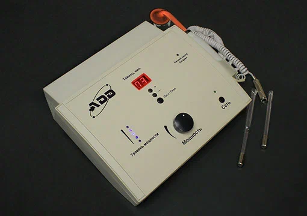

ADD – appliance for detoxification and disinfection of the human body
In partnership with PolyMedEco LLC, we offer an innovative development by S.V. Ormann — ADD (appliance for detoxification and disinfection of the human body).
SME INNOVATIONS LLC is an official partner of PolyMedEco LLC in the territory of the Russian Federation, the CIS countries, India, Southeast Asia, North America and the European Community.




MAIN ADVANTAGES OF THE ADD DEVICE
- It forms oxygen inside the body autonomously from any oxygen sources.
- It prevents respiratory failure. It autonomously raises saturation and maintains it without external oxygen sources.
- High efficiency in the treatment of Covid-19 and its complications.
- Non-invasive treatment method (non-destructive, atraumatic, bloodless).
- The Human Detoxification and Disinfection Device (ADD) is safety class 2A. It operates 24 hours a day.
- The device is a source producing a non-standard antibiotic with unlimited resource, duration of use and shelf life.
- It is ecologically compatible with the human body and other biological objects.
- The most powerful disinfectant for both external and internal use without damaging human cells, organs and tissues.
- ADD provides prevention of any infections and accelerates the reparative process 2–3 times.
- It suppresses anaerobic bacterial and viral infections, including COVID-19. It has already been used by patients during the epidemic.
- It has no contraindications, complications, side effects or allergies. Overdose is impossible.
- It neutralizes toxins of any kind inside the body to inactive forms.
- It lowers body temperature during inflammation regardless of pathology and the use of pharmacological drugs.
- It prevents the development of pneumonia, pulmonary edema and any edema in particular, as well as the formation of blood clots.
- It stops the acute course of a disease and shortens its duration.
- It is indicated for any concomitant diseases.
- There are no restrictions for the treatment of children and elderly people.
- The procedures can be performed by both medical staff in a hospital and the patient themselves in a clinic or at home.
- It has passed all mandatory studies since 2010 in accordance with the Ministry of Health of the Russian Federation.
- Tests were conducted in intensive care units of hospitals, traumatology, surgical clean and purulent departments of medical institutions in three countries: the Russian Federation, the Republic of Belarus and the Republic of Kazakhstan.
- It can be used in infectious diseases departments of hospitals to neutralize toxins, suppress infection directly inside the human body and detoxify toxic substances of any origin.
- It was used in gynecology, urology, proctology, neurology, ENT, pulmonology, cardiology, vascular surgery, helminthiasis and others. It has shown good results in the treatment of childhood pathologies; it is indicated during pregnancy and lactation, in children under one year of age and older, and for the treatment of elderly people.